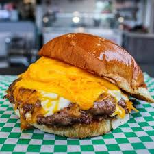

Cheese Burger

Description
A cheeseburger is a classic hot sandwich consisting of a grilled or pan-fried ground beef patty topped with melted cheese, served between two halves of a bun.
Ingredients
- Beef Patty: 500g (1 lb) Ground beef (80% lean/20% fat)
- Cheese: American, Cheddar, or Swiss are popular choices that melt well.
- Bun: Typically a soft hamburger bun, often sesame seed, toasted or plain.
Steps
- Prepare the Patties: Divide 500g of beef into 4 equal portions and gently shape them into balls, then press into patties about 1-2cm thick. Make the patties slightly wider than the buns to account for shrinkage. Pro tip: Use your thumb to make a slight indentation in the center of each patty to prevent them from doming while cooking.
- Season: Combine the yeast mixture with flour, salt, and olive oil. Knead the dough by hand for 8 to 10 minutes or in a mixer for 7 to 10 minutes until it is smooth and elastic.
- Preheat the Pan/Grill: Heat a cast-iron skillet or barbecue to high heat. Add a small amount of oil.
- Preheat Oven: Place patties in the hot pan. Cook for 3-4 minutes on the first side until a deep, brown crust forms.
- Flip and Melt Cheese: Flip the patties once (do not press down on them, as this squeezes out juices). Immediately top with cheese slices. Cook for another 2-3 minutes, or until the cheese is melted and the burger is cooked through.
- Toast Buns: While the burgers cook, toast the buns (cut side down) in the pan or on the grill until golden.
- Assemble: Build your burger with the base bun, followed by the patty with melted cheese, and top with your desired condiments and vegetables.
- Rest and Serve: Let the burgers rest for 2-3 minutes before serving to ensure they are juicy.
Head back to the Home page